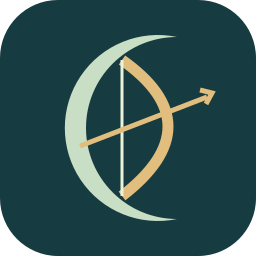

MOONBOWTHE MOSS GARDEN AWAKENS
月光祕境
MOONSTRING · AWAKENING
沿著苔石小徑，走進甦醒的遺跡。
停步，拉弦；箭離弓，月光隨行。
01一關，先把手感做好
03三種有預警的敵人
3D完整骨架與場景模型
A SMALL, PLAYABLE SLICE
先試一場，找回遊戲的感覺。
這次由 Godot 引擎運行。沿用網址遊玩的方式，換上骨架動畫、碰撞與立體場景。
W A S D
走位閃避，停下自動瞄準。
移動會收弓，站穩後拉弦射箭。
SPACE
短距離衝刺，避開敵方箭雨與落雷。
手機：左側拖曳搖桿，右側衝刺。
3 WAVES
清除三波守衛，選擇月光祝福，
最後走進上方的傳送門。
首次需下載約 20 MB。需要 WebGL 2，請透過 HTTPS 網站開啟。
場景背景 / BLENDER OFFLINE PREVIEW